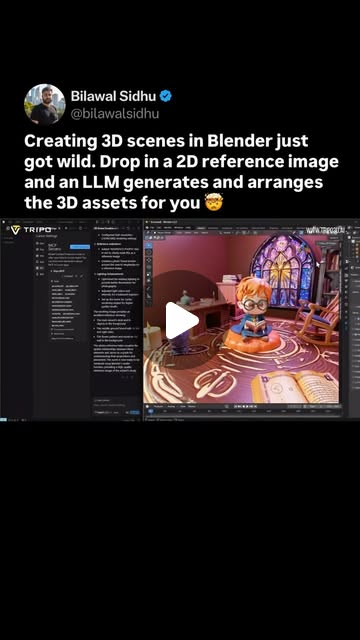
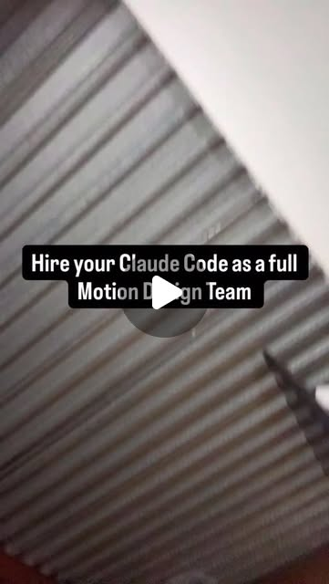

emergent_capability
Natural Language → 3D Scenes: The Pipeline That Didn't Exist 6 Months Ago
MCP + Blender + Tripo + Claude Code together create a natural language 3D scene builder — describe what you want, get a full 3D scene. This was impossible before MCP existed.
Blender · Claude · Claude Code · Higgsfield · Hunyuan3D · Hunyuan3D-2 · MCP · MediaPipe · Playwright · Tencent · TouchDesigner · Tripo
Try It — Action Sketch
Set up Blender MCP server → connect to Claude Code → use Tripo/Hunyuan3D for mesh gen → describe scenes in plain English → get rigged, lit 3D environments. Add TouchDesigner for live interaction.
Prerequisites: Blender (free), Claude Code subscription, Tripo API key (free tier available), MCP server setup (~15 min)
Connected Posts (4)

Blender MCP + Tripo — 2D reference image to full 3D scene
@bilawal.ai demos a Blender MCP integration that takes a 2D reference image, has an LLM decompose the scene, generates 3D assets via Tripo, and arranges them to match. Forward-looking on Unity/Unreal MCP equivalents.
Read Guide →

Hunyuan3D-2 — Tencent's free image-to-3D model generator
Tencent's Hunyuan3D-2 turns text or an uploaded image into textured 3D models in seconds. Free web UI; pipeline is upload > Generate Shape > Generate Textured Shape > download. Good for game/app asset workflows.
Read Guide →

You can turn Claude Code into a full motion design team on @higgsfield.a...
You can turn Claude Code into a full motion design team on @higgsfield.ai . Ads, UGC and 3D style content fully autom... — @jens.heitmann; uses Claude, Claude Code; demonstrates MCP.

MediaPipe TouchDesigner plugin by @blankensmithing
@neles0n trying the MediaPipe plugin by @blankensmithing inside TouchDesigner. Useful pointer for anyone doing body/hand tracking in TD creative-coding pipelines.
Deeper Dive generated 2026-04-22T01:12:45.864446 · Curated by Claude for Gabe (@6ab3) · dejaviewed.com